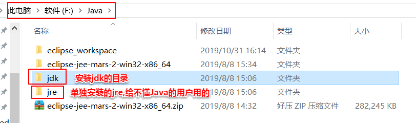

软件：
机器语言：
0,1 二进制
汇编语言：
mov pop push
高级语言：
C 面向过程
C++ 面向对象
java 跨平台
------------------------------------------------------------------------------------------------------------------------------------------------------------------------
java发展史
类库
jdk1.0 awt
1.1 事件
1.2 swing 集合框架
J2SE ,J2EE ,J2ME
1.3
1.4
1.5（5.0） 泛型
为了说明这个版本的重要性,直接对外宣称这是5.0版本(对内这其实是1.5版本)
6.0 JavaSE ,JavaEE ,JavaME
7.0 switch -String
int 0b 435_4465657
<>
8.0 函数式接口 ,Lambda ,Stream
9.0 模块化
10.0 var n = 11.1;
11.0
------------------------------------------------------------------------------------------------------------------------------------------------------------------------
编译型:c、c++ 不跨平台,但直接从源代码翻译成机器语言,效率很高
源代码 -> 机器语言
解释型:python 可跨平台,但是写一句翻译一句,效率慢
源代码 -> 逐行解释执行
编译解释型：java 可跨平台,效率也还行
先编译一遍,再解释执行,但"字节码 -> 机器码"比"源代码 -> 逐行解释执行"这种纯解释型的效率高。
字节码的形式是很接近于机器码的
源代码 -> 字节码 -> 机器码
要解释java为何能跨平台就要从java的执行过程来讲。java是通过JVM执行的，而JVM才是java跨平台的关键，JVM集成了在此平台执行的指令集。所以看起来java只需要写一遍代码，经过一次编译之后，就可以各平台通用。其实没注意到的是，java的安装包, 针对不同的平台，就有不同的安装文件（你可以从官网上看到同一版本的java针对各个系统有不同的安装文件）。相对于其他语言不能跨平台，java只是把这种平台间的差异放在了java的安装包中(或者说jdk中),在安装包中解决了这些差异, 就不需要程序员自己来解决这个不同平台会带来的问题了, 也就是不需要程序员关心平台不同时同一个字节码文件的执行问题。
C语言跨平台？
有的说C语言也可以说是跨平台的：C语言本身是跨平台的，但程序不是，如果你的程序只使用C标准的输入输出，那么源代码也是跨平台的，只要用对应平台的编译器编译就可以运行，如果你使用了平台专有的API，那么就不能跨平台，比如WINDOWS窗口程序，就调用了WINDOWS的创建窗口，显示窗口等API（这些调用并不一定在你自己的代码中），linux是没有这些API的，所以就无法编译运行。
JAVA为什么能跨平台？
因为字节码是在虚拟机上运行的，而不是编译器。换而言之，是因为JVM能跨平台安装，所以相应JAVA字节码便可以跟着在任何平台上运行。只要JVM自身的代码能在相应平台上运行，即JVM可行，则JAVA的程序员就可以不用考虑所写的程序要在哪里运行，反正都是在虚拟机上运行，然后变成相应平台的机器语言，而这个转变并不是程序员应该关心的。
-------------------------------------------------------------------------------------------------------------------------------------------------------------------------
JDK ：java开发工具包
开发工具bin + JRE + 类库lib(这个类库是给编译器提供的类库)
JRE：java运行环境
JVM + 类库lib (这个类库是给解释器提供的类库,和"jdk/lib/"目录的这个lib不同,"jdk/lib/"这个类库是给编译器提供的类库)
注:
因为在安装jdk时,在安装完jdk之后,接下来还会再问是否单独安装jre,这个jre其实不是给程序员用的,
给程序员用的jre其实已经在安装jdk时已经安装在了jdk的目录里
单独安装的那个jre目录其实是给不懂Java的用户使用的,只要能运行Java代码即可,
那个jre是不包含程序调试之类的功能的。
而我们程序员自己使用的其实是安装jdk时的安装目录里的jre


------------------------------------------------------------------------------------------------------------------------------------------------------------------------
运行一个Java程序需要的两个小翻译工具(编译器和解释器),通过两个dos命令来调用:
编译器：javac (在"jdk/bin/"下)
解释器(执行)：java ( 也在"jdk/bin/"下,注意不在"jdk/jre/bin/"下,应该是这个解释器工具会自己去调"jdk/jre/bin/"下的类库)
(在编程软件里执行java程序的话,这两个dos命令不用自己写,软件早就打包好了,如果是在cmd命令窗口执行的话就需要自己敲了)
-------------------------------------------------------------------------------------------------------------------------------------------------------------------------
DOS命令：
DOS：
1.开始 -> 附件 -> 命令提示符
2.cmd
盘符：
c:
d:
c:\目录\子目录\a.txt
具体dos命令有:
1.改变当前的目录
cd 目录名
cd .. 回退到上一级目录
cd \ 回到根目录
2。查看目录的内容
dir
dir /s 所有子目录下的目录清单
dir /s/p 分屏查看所有子目录下的目录清单
3.新建目录
md 目录名
4.创建文件
copy con 文件名.扩展名
内容编辑
ctrl + Z
5.复制
copy 原文件 目标路径
6.重命名
ren 原文件名 新的文件名
7.移动
move 原文件名 目标路径
8.删除目录
rd 目录名
删除空的目录
9.删除文件
del 文件 删除指定文件
del *.* 删除目录下所有文件
10.清屏
cls
11.退出
exit
12.帮助。
查看系统有哪些命令 :help
查看某个命令有哪些可选项 : help 命令名 (如 help dir)
------------------------------------------------------------------------------------------------------------------------------------------------------------------------
编译器：javac
解释器：java
源文件 Hello.java
| javac
字节码文件 Hello.class
| java
机器码
-------------------------------------------------------------------------------------------------------------------------------------------------------------------------
环境变量配置
方法：
1.临时配置: 只对当前dos有效
classpath:
类路径
d:\data;d:\data1;d:\data2
想要在任何路径在都能找到要解释执行的字节码文件.class
2.永久配置
java_home:(即JAVA_HOME)
D:\Java\jdk1.8.0_144
可能有多个JDK版本，不想经常改path，
则新建java_home环境变量，把JDK的安装路径配置到java_home中
path :
想要javac，java命令在任何路径下都能识别.
set path=D:\Java\jdk1.8.0_144\bin
或者：%java_home%\bin
-------------------------------------------------------------------------------------------------------------------------------------------------------------------------
访问权限修饰符
公有的 定义类 类名 { 作用域 }
public class Hello{
公有的 静态 无返回值 函数名 (参数:字符串 数组 数组名)
public static void main(String[] args){ //主方法
类.对象.打印("内容");
System.out.println("hello abc");//输出
}
}
public static void main(String[] args)中的静态(static): 表示这个方法是归当前类所有的,不归属于其他类。当然也可以在当前类里定义静态类如:
public static class Hi{
}
也表示这个类是归属于当前类的
注意：
1.区分大小写；
2.分隔符;英文半角；
3.语句结束用分号；
4.代码要有缩进。
---------------------------------------------------------------------------------------------------------------------------------------------------------------------------
注释：
1.单行注释
// 注释的内容
2.多行注释
/* */
3.文档注释
javadoc
声明（只能注释以下内容） 类；类中的成员；接口
/** */
javadoc -d 生成文档目录 -author -version -private 要生成文件的文件名.扩展名
不用参数-private 指定则只识别公共 public 和受保护 protected 的
javadoc -public 只识别 public权限的
-protected 会识别 public，protected权限的
-package 会识别 public，protected，default权限的
-private 会识别 public，protected，default，private权限的
在Java中, default就是定义类时啥限定词都没,如 class DocComment{ }, 区别于 private class DocComment{ }

更高级的方法,显示版本号和作者:

--------------------------------------------------------------------------------------------------------------------------------------------------------------------------
println("字符串")
1.普通字符：原样输出
2.转义
1）八进制
A->65 a ->97
2）十六进制
3）转义字符
\n 换行
\\ \
\' '
\" "
\t 空出一个水平制表位
println("")和print("")的区别 :
println("")
输出后，换行
可以不带参数（不带内容）,不带内容就相当于一个换行符,起一个换行的作用
print("")
输出后，不换行
必须带参数（内容）
printf()的用法(和C语言的用法类似)可用来格式化变量
例如：

输出结果为：

--------------------------------------------------------------------------------------------------------------------------------------------------------------------------
进制转换:
(1)十进制转其他进制:(除法)

(2)其他进制转十进制(乘法)
 (3)二进制转八进制和十六进制 (三位一组和四位一组)
(3)二进制转八进制和十六进制 (三位一组和四位一组)
--------------------------------------------------------------------------------------------------------------------------------------------------------------------------
原码、反码、补码
正数的原码反码补码都是其本身。
负数的反码是: 原码除符号位取反(也可以说是 其绝对值的原码所有位取反 求的,)
负数的补码是: 原码除符号位取反后＋1

负数的原码转补码和补码转原码 都可以用: 除符号位取反后+1
同理, 正数的补码转其对应的负数的补码（如10的补码转-10的补码）只需所有位取反后＋1。所以与之对应的,负数补码转其对应的正数的补码只需先-1再所有位取反
但实际上,负数补码转其对应的正数的补码也可以所有位取反后＋1。
所以又得出结论,
正数补码转其对应的负数补码和负数补码转其对应的正数的补码都只需所有位取反后＋1
其余关于补码的知识见笔记本-----计算机基础知识/关于补码
———————————————————————手写与上传资料分割线———————————————————————